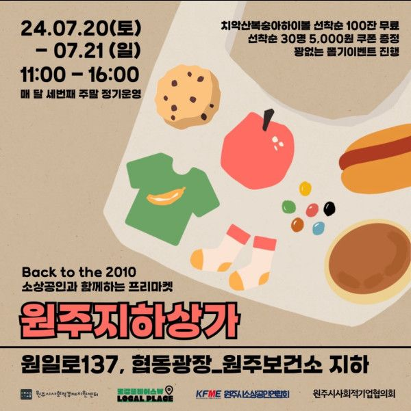

2016년부터 2019년 5월까지
생생마켓 X 토닥마켓 운영으로
사람들이 북적이던 원도심 속 '원주지하상가'
사회적경제기업과 원주인근지역 소상공인, 농부셀러들이
소비자들과 가장 가깝게 만날 수 있던 마켓이었어요
2019년 5월 근거없는 주장들로 멈출 수 밖에 없었는데
코로나시기 조명이 보강되고 음향장비도 생기고
여름엔 시원한 에어컨과 겨울 따뜻한 히터가 나오는
그야말로 마켓의 최적의 장소가 되었더라구요.
또 #원주시소상공인종합정보센터 도 생겨
라이브커머스, 스튜디오 등 연계할만한 자원이 생기기도 했구요
한달에 2번이지만 몇천명이
원도심을 방문하는 흔치않은 일이었던
원주 지하상가 마켓을 다시 시작해봅니다
함께 버틸 셀러들과
버팀목이 되어줄 주최주관사들의 뜻을 모으며
응원해주시는분들이 많아 참 감사한날들 이었습니다
다시 소상공인들이 소비자를 가까이에서 만날 수 있도록
지하상가가 다시 북적일 수 있도록
함께해주실 방문객을 기다립니다 :)
33팀이 함께해주시겠다 신청해주셔서
기존보다 규모는 작을지 모르지만
점점 알차지고 더 많은 셀러들이 함께 할 수 있기를 기대합니다
함께해주시는
#원주협동사회경제네트워크 #원주시사회적경제지원센터
#원주시소상공인연합회 #원주시사회적기업협의회
감사합니다
#매달3째주주말 #원주보건소지하 #원주지하상가 에서 만나요!
#무료주차 #로컬플레이스W
소상공인, 사회적경제기업, 농부 셀러들이
마켓에 나오지않아도 되는
부자되는 그날까지
소상공인과 함께하는 프리마켓
원주지하상가
장소 : 원주보건소지하 원주지하상가 (원일로137)
날짜 : 2024년 7월 20일(토) ~ 21일(일)
시간 : 오전 11시 ~ 오후 4시
추가 참가문의 [연락처 생략] 조미화